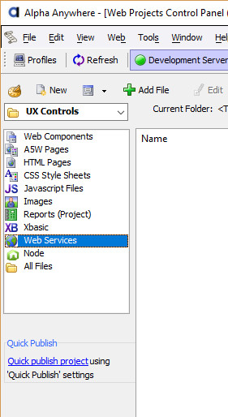

Effective September 1, 2022, Alpha Anywhere (all products and platforms) is deprecating support for WCF and SOAP web services.
If your application depends on SOAP or WCF services, contact your vendor immediately for instructions on connecting using a RESTful service and convert your applications to use RESTful service APIs.
Effective January 1, 2023, Alpha Anywhere will no longer support WCF and SOAP web services. WCF and SOAP service support will be removed in future releases of the product.
Windows Communication Foundation (WCF) is a foundation for building web services using .NET. Finding a working example of a web service to explore WCF web services can be difficult. We have included a fully working WCF web service with this article so you can start working with WCF web services right away. Installing and running this service can also be useful in identifying issues.
In the sections below, you will:
For your convenience, we have created a working web service and compiled it so the application is ready to run. The download also includes a complete Visual Studio 2017 solution and project files. You should be able to make changes and recompile the service if you wish.
The example web service is ready to run on your local system. Follow the instructions below to download, install and run the example.
Application GUID: 02639d71-0935-35e8-9d1b-9dd1a2a34627 The service is ready at http://localhost:8777/ExampleWCFService Press <Enter> to stop the service.
As you can see from the text above, your service is running on port 8777. Now let's confirm that we can connect to the service.
Click on http://localhost:8777/ExampleWCFService
You should see a test page that looks like the following:
Click on http://localhost:8777/ExampleWCFService?WSDL
You should see a listing of the WSDL for the service that looks like the following:
In order to connect to the service from Xbasic, we must first generate an assembly and then register it in the type system of Alpha Anywhere.
For a more in-depth discussion of creating Xbasic clients for services see Creating and Using Web Service Proxies in Xbasic
Create the client assembly.
The Xbasic example below will check to see if the client assembly exists in the temporary folder for your user and, if not,
generates a new assembly client assembly.
For this example, the temporary folder is sufficient.
If you want to publish the assembly in your web project you will need to put the assembly into the bin
folder under the root of the web project.
' Generate a client assembly if needed.
dim srv as dotnet::Services
Path = File.Temp_path_get()
AssemblyFileName = Path + "ExampleWCF.dll"
if .not. file.exists(AssemblyFileName)
if .not. srv.GenerateWCFWebServiceClientFromURL("http://localhost:8777/ExampleWCFService?WSDL", AssemblyFileName)
showvar(srv.callresult.text, "Error Generating Assembly")
end
end if
end if
Register the types in the assembly in the Xbasic type system.
The Xbasic example below checks to see if the client assembly has been registered by looking for
a namespace hat matches the name "ExampleWCF".
If the type is not found, it calls the RegisterAssembly function on an instance of the DotNet::Services object.
This will register all of the types in the assembly under the root namesapce "ExampleWCF" so the assembly types
are distinguishable from other types in the runtime.
' Register the type if needed.
dim srv as dotnet::Services
if .not. ::Type::Definition::Exists("ExampleWCF")
dim ay as dotnet::AssemblyReference
ay.Filename = AssemblyFileName
if .not. srv.RegisterAssembly("::ExampleWCF", ay)
showvar(srv.callresult.text, "Error Registering Assembly")
end if
end if
Create the client object. Dimension a binding object, an endpoint, and the client itself, so we can make service calls.
' Create a binding and endpoint and then create the client object.
dim binding as System::ServiceModel::BasicHttpBinding
dim endpoint as System::ServiceModel::EndpointAddress \
= new System::ServiceModel::EndpointAddress("http://localhost:8777/ExampleWCFService")
dim Client as ::WCF::CustomerServiceClient = new ::WCF::CustomerServiceClient(binding, endpoint)
Make web service calls using the functions exposed by the client object.
For each service call, dimension a request object, set any parameters and invoke the function,
passing the request and receiving the response.
The Xbasic script below lists out the products and customers, and then retrieves a customer.
The customer is returned as a Customer object with orders and order items within it.
Web services often accept and return complex objects and collections in a single call.
' Get a list of Products dim ListProductsRequest as ::WCF::ListProductsRequest r = Client.ListProducts(ListProductsRequest) dim Text as C Text = "There are " + r.ListProductsResult.Length + " products." + crlf(2) for each s in r.ListProductsResult *Concat(Text, s + crlf()) next *Concat(Text, crlf(2)) ' Get a list of Customers dim ListCustomersRequest as ::WCF::ListCustomersRequest r = Client.ListCustomers(ListCustomersRequest) *Concat(Text, "There are " + r.ListCustomersResult.Length + " customers." + crlf(2)) for each s in r.ListCustomersResult *Concat(Text, s + crlf()) next *Concat(Text, crlf(2)) ' List out the orders for the first customer. dim FirstCustomer as C = r.ListCustomersResult[1] dim GetCustomerRequest as ::WCF::GetCustomerRequest GetCustomerRequest.Name = FirstCustomer r = Client.GetCustomer(GetCustomerRequest) Customer = r.GetCustomerResult *Concat(Text, "Customer: " + Customer.CompanyName + \ " of " + Customer.City + " has " + Customer.Order.Length + " orders." + crlf(2)) for each o in Customer.Order *Concat(Text, "Date: " + o.CreateDate + crlf(2)) for each i in o.Item *Concat(Text, "Product = '" + i.Product.Name + \ "' Quantity = " + i.Quantity + " " + i.product.UnitOfMeasure + crlf()) next; *Concat(Text, crlf(3)) next ShowVar(Text, "Results")
Now that you have had a chance to see the Xbasic required to communicate with a web service, let's look at an easier way to create and maintain client assemblies that proxy a web service.
Using the web control panel, you can create a Web Reference object. This object manages creating the client assembly and registering it in the Xbasic type system.
With a Web Reference you can also explore the web service and create test scripts to call functions.
For a more in-depth discussion of creating and using Web Reference components see Creating a Web Reference.
The new Web Reference will be added to the control panel.
Once your Web Reference is created, you can test it by selecting Web Services in the list on Web Project Control Panel and then double
clicking on the Web Reference in the list to the right.
The Edit/Explore Web Reference dialog can be used to explore a web reference and to generate a working script to call a function on the client object.
To create a working script, select GetCustomer in the list of functions on the left and then click Test Method
on the bottom left of the dialog.
This will generate Xbasic code you can use for testing.
The editor will open with a test script generated for you.
The script is almost complete. It needs a valid customer name. Replace the empty quotes on line three ("arg_Request.Name = "") with the value "American Soft Drink Company".
Click the Execute button to execute your script and see the results.
A window will open with the results of your web service call.
You should now have a working web service, an Xbasic script to create and test a client assembly, and a Web Reference you can use to make calls from a web application. Real world web services tend to be more complicated, particularly from a configuration standpoint. Be sure to review the instructions above and to read SOAP Web Service Clients for a more complete look at SOAP and WCF web service integration.